1)Git clone
There can be numerous ways to clone an existing repo. Two of them are discussed here. 1.1) clone through command line prompt. You will simply copy repository address and then use git clone command
1.2) clone with git app/software available for windows and mac. You will open the Git GUI and paste the address

Now add some file in the cloned repository. Edit it using any code editor of your choice. From VScode open a new terminal to commit and push new files. 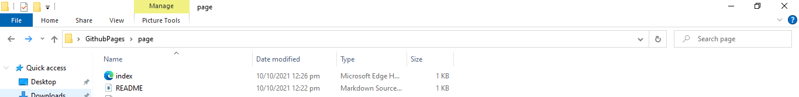
Now add some code into your file and open terminal from the menu window. 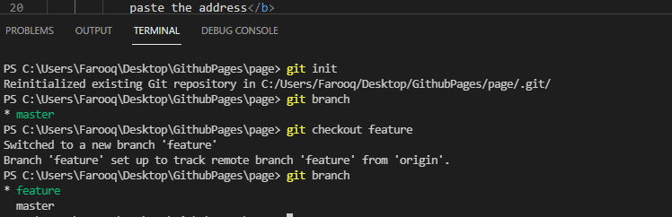
2)Git branch
Now we will use git branch command to check which branch we are on at the moment. Alos we can check list of all branches through this command. 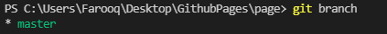3)Git checkout
This command iss used to move to other branches where you would want to push your code. Also you can make new branch through this command and move to it simultaneously. 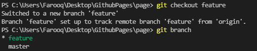4)Git status
this sommand is used to check your all local files. like if they are ready and saved. 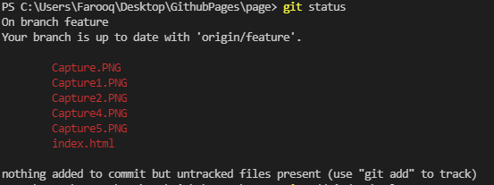5)Git add
This command is used to add/stage the files you think are ready to be committed and pushed. git add filename for singgle file and git add . for all the files in that loat repository6)Git commit
With this command your files are now staged completely and ready to be pushed. -m command with commit is used to give a message for the commit. 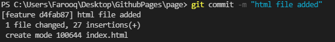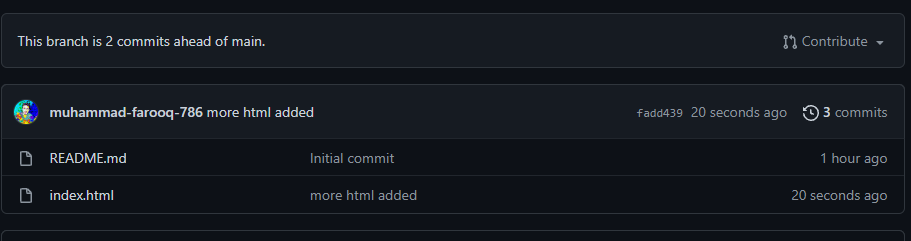
7)Git push
All the files you have committed in the previous step have now been pushed to the remote repository. 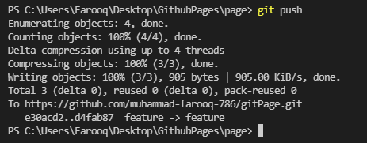8)Git pull request
Pull request command is used when the project is big and have many branches. For different features it may have many branches. So,after working on those features oe want to merge his/her code to the main code branch. Fo that purpose we use pull request. 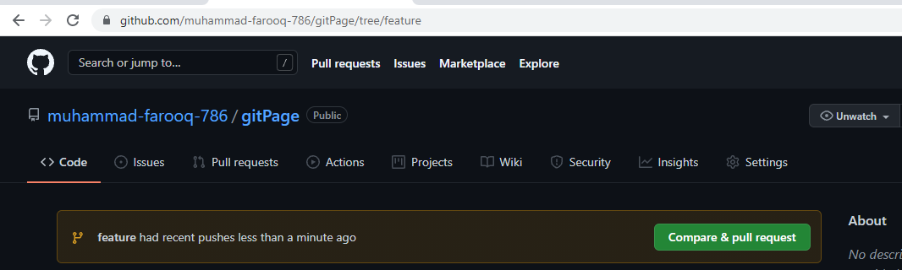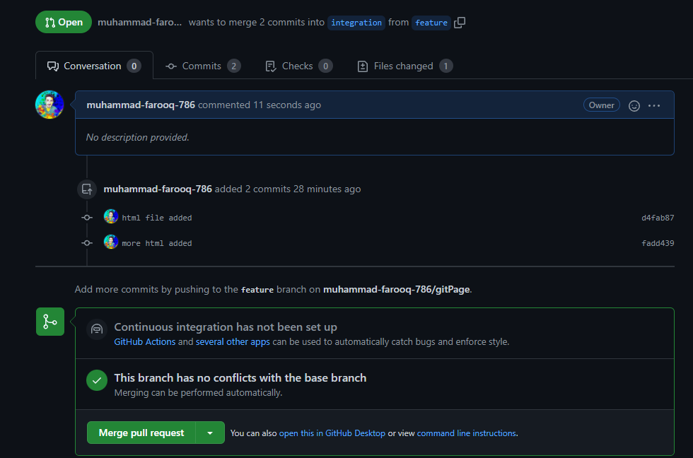
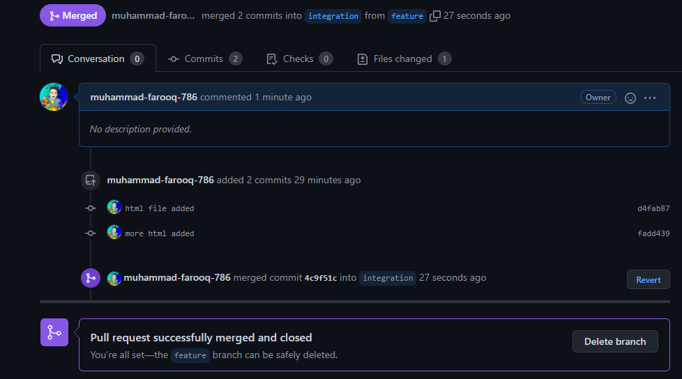